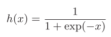
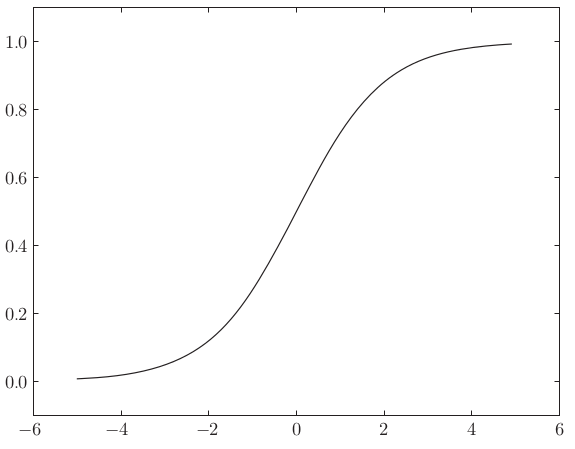
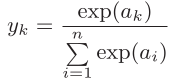
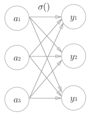
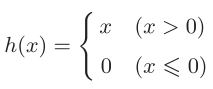
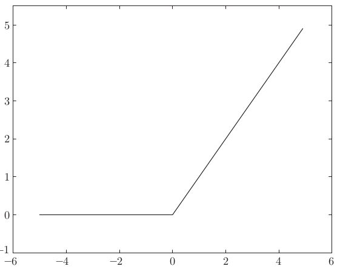

2. 神经网络¶
{kind=link}
2.2. 激活函数¶
阶跃函数
{kind=link}
def step_function(x): y = x > 0 return y.astype(int)
- 恒等函数
def identity_function(x): return x
sigmoid函数
 
{kind=link}
def sigmoid(x): return 1 / (1 + np.exp(-x))
sigmoid和阶跃函数的比较
- 相同点
- 不同点
softmax函数
 def softmax(a): c = np.max(a) exp_a = np.exp(a - c) # 溢出对策 sum_exp_a = np.sum(exp_a) y = exp_a / sum_exp_a return y
softmax函数的输出是0.0~1.0之间，并且输出值的总和为1。
ReLU函数
 
{kind=link}
def relu(x): return np.maximum(0, x)
2.3. 输出层设计¶
神经网络可应用在分类问题和回归问题上。
一般而言，回归问题输出层激活函数使用恒等函数，分类问题使用softmax函数。
对于分类问题，输出层神经元的个数一般设定为类别的数量
2.4. 代码实现¶
三层网络示例
代码示例
- 初始化网络参数
- 前向传播
{kind=link}
def init_network(): network = {} network['W1'] = np.array([[0.1, 0.3, 0.5], [0.2, 0.4, 0.6]]) network['b1'] = np.array([0.1, 0.2, 0.3]) network['W2'] = np.array([[0.1, 0.4], [0.2, 0.5], [0.3, 0.6]]) network['b2'] = np.array([0.1, 0.2]) network['W3'] = np.array([0.1, 0.3], [0.2, 0.4]) network['b3'] = np.array([0.1, 0.2]) return network def forward(network, x): W1, W2, W3 = network['W1'], network['W2'], network['W3'] b1, b2, b3 = network['b1'], network['b2'], network['b3'] a1 = np.dot(x, W1) + b1 z1 = sigmoid(a1) a2 = np.dot(a1, W2) + b2 z2 = sigmoid(a2) a3 = np.dot(a2, W3) + b3 y = identity_function(a3) return y network = init_network() x = np.array([1.0, 0.5]) y = forward(network, x) print(y)